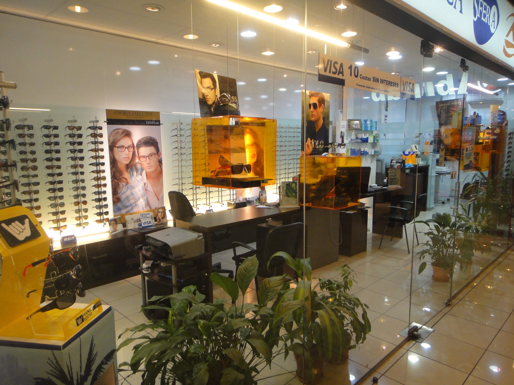

Sucursales
Sucursal Prado

Sfera es una óptica nueva pero con el respaldo de años de experiencia, está dirigida por personas jóvenes con afán de superación.
Nuestro objetivo es dar un asesoramiento profesional, una atención responsable y complacer a todos nuestros clientes es un logro que perseguimos día a día.
Ubicada en dos puntos estratégicos de la ciudad de fácil acceso.
Con frecuencia se pasa por alto la importancia de una audición clara y completa, cuando la capacidad auditiva se ve disminuida, la comunicación se interrumpe constantemente, genera estrés, y en muchas ocasiones aislamiento, además de que muchos sonidos cotidianos que nos envuelven simplemente dejan de existir en nuestra experiencia.
Se piensa que un audífono es para aquel que “realmente” tiene problemas de sordera. Sin embargo, tener dificultades de audición y no acudir a remediar esta desventaja es como la persona que tiene dificultad de ver y se rehúsa a usar lentes. Generalmente la pérdida de audición avanza de forma paulatina e imperceptible para quien la padece.
Suelen ser sus familiares y amigos quienes se dan cuenta cuando notan que frecuentemente pide que le repitan palabras, escucha el televisor y el radio a un volumen muy alto, parece distraído o ausente en reuniones donde tiende a aislarse y apartarse, y se queja de que ciertas personas hablan muy bajo, no obstante se siente irritado ante gritos de niños o ruidos intensos.
El poder escuchar mejor le devuelve gran intensidad a la vida de quien padece algún tipo de padecimiento auditivo, le permite integrarse con naturalidad a las conversaciones, advertir las necesidades de un bebé que llora, escuchar un grito de precaución en la calle, escuchar música, e incluso sonidos que ya tiene olvidados.